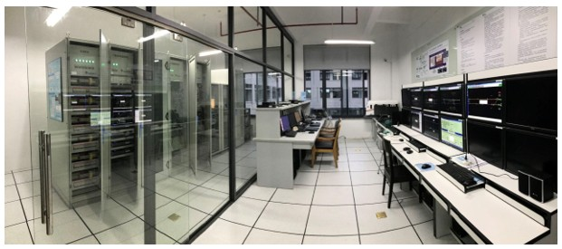
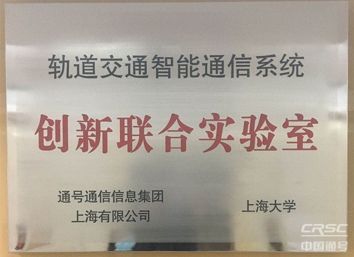

关于实验室
了解上海大学轨道交通无线通信联合实验室的成立背景、学科优势与科研平台
实验室概况
上海大学轨道交通无线通信联合实验室由卡斯柯信号有限公司、上海中铁通信信号测试有限公司及上海控安联合共建，依托上海大学电磁场与微波、通信与信息系统两个博士点的学科优势，长期致力于城市轨道交通无线通信领域的基础理论与工程应用研究。
实验室主要针对大规模地铁建设中基于通信的列车控制（CBTC）这一跨学科挑战，深入研究隧道等特殊环境下的电磁波传播理论、列车控制对4G/5G 通信低时延、高可靠性的技术条件，攻克了限定空间无线信道建模以及信号系统与通信系统对接试验等工程难题。



合作单位
卡斯柯信号
Casco Signal Ltd.
中铁通信信号测试
CRSC Testing Co.
上海控安
Shanghai Control Safety
华为技术
Huawei Technologies
申通地铁
Shentong Metro Group
美国密西根大学
University of Michigan
香港中文大学
CUHK
南洋理工大学
NTU Singapore
科研平台
无线通信物理信道平台
允许被测系统在物理模拟的各类无线传输环境中运行，为信道测量、建模和验证提供了关键实验条件。支持从 Sub-6 GHz 到毫米波频段的全面覆盖，可模拟隧道、车站、高架桥等多种轨道交通典型环境。
网络综合测试平台
用于测试 LTE-M 承载 CBTC 及其他业务时的时延、吞吐量、丢包等可靠性指标。搭建了 LTE-M 系统专用信息安全防护装备，并进行了全面的通信性能测试。